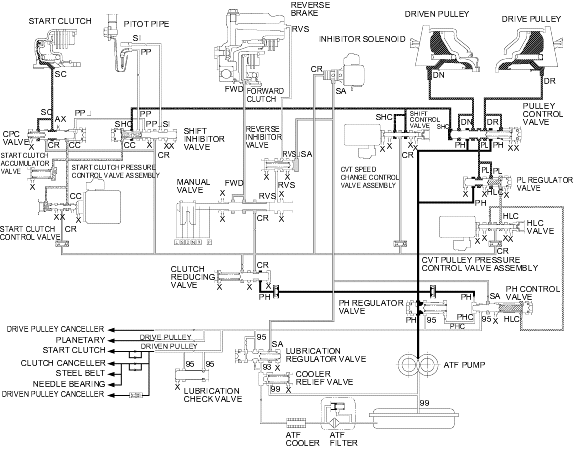

Position, at middle speed range
Position, at middle speed range
Honda Multi Matic Transmission/CVT
|
14-279 |
Position, at middle speed range
As the speed of the vehicle reaches the prescribed value, the CVT speed change control valve assembly is activated by the PCM. The CVT speed change control valve assembly controls the pulley control valve to activate shift control pressure (SHC). Clutch reducing pressure (CR) from the clutch reducing valve becomes shift control pressure (SHC) at the SHC valve and shift control pressure (SHC) flows to the left end of the pulley control valve. The pulley control valve is moved to the right side positioning it in the middle of its travel and covers the port to stop high pressure (PH) to the pulleys and uncovers the port leading low pressure (PL) to the pulleys. The drive pulley and the driven pulley receive low pressure (PL) and the pulley ratio is in the middle. Hydraulic pressure remains to apply the forward clutch and the start clutch.
NOTE: When used, ''left'' or ''right'' indicates direction on the hydraulic circuit.
